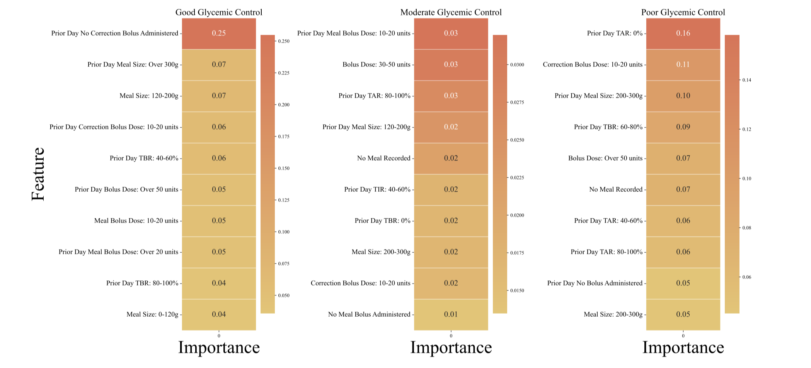
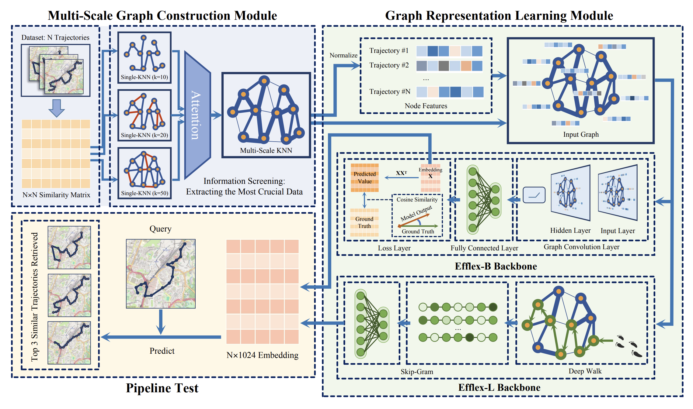
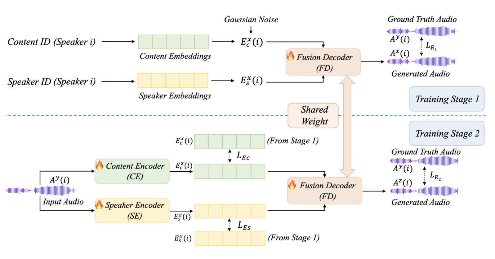
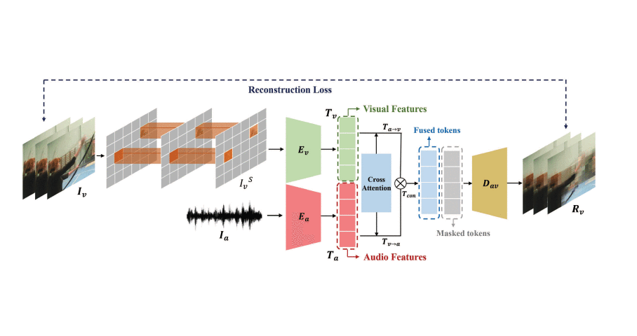
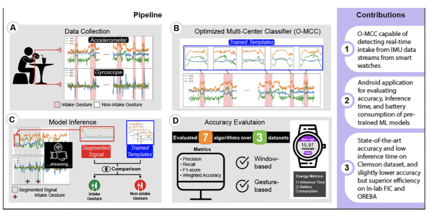
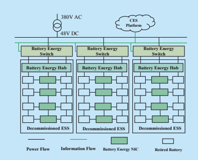
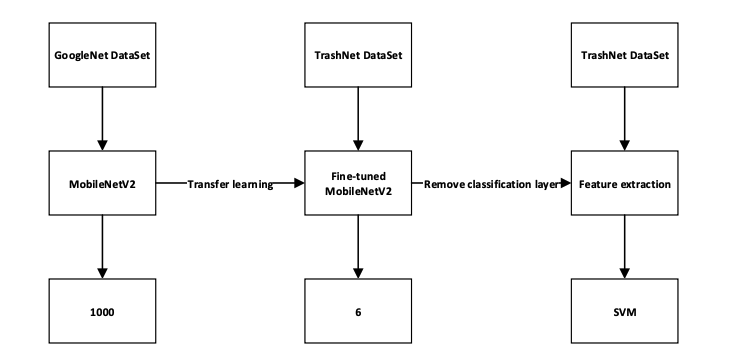
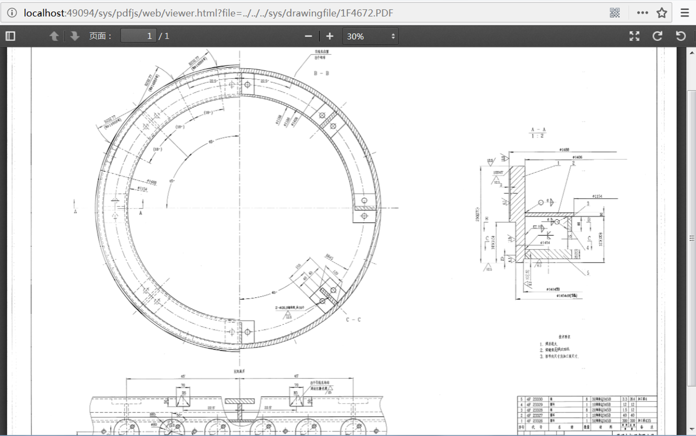

Xingjian Diao
About Me
I am currently a Ph.D. student at Dartmouth College, advised by Prof. SouYoung Jin. I focus my research on Video Understanding as it has numerous practical applications that can benefit society in various ways. I am excited to carry out advanced research focused on training sophisticated, trustworthy, and high-quality machine learning models that can better interpret and comprehend the visual world.
Prior to Dartmouth, I earned a Master's degree in Computer Science from Northwestern University (2021), advised by Prof. Nabil Alshurafa, and a B.S. degree in Computer Science from the University of Pittsburgh (2020).
Interests
- Video Understanding
- Multi-modal Learning
- Health Intelligence
Education
-
 Ph.D. in Computer Science, -PresentDartmouth College
Ph.D. in Computer Science, -PresentDartmouth College -
M.S. in Computer Science, 2021Northwestern University
-
B.S. in Computer Science, 2020University of Pittsburgh
* indicates equal contribution
|  |
Ziyi Zhou*, Ming Cheng*, Xingjian Diao*, Yanjun Cui, Xiangling Li Accepted 46th Annual International Conference of the IEEE Engineering in Medicine & Biology Society, 2024 🎖 IEEE EMBC NextGen Scholar Award |
|  |
Ming Cheng*, Ziyi Zhou*, Bowen Zhang*, Ziyu Wang, Jiaqi Gan, Ziang Ren, Weiqi Feng, Yi Lyu, Hefan Zhang, Xingjian Diao Accepted CVPR Workshop: SG2RL2024, 2024 |
|  |
Ming Cheng*, Xingjian Diao*, Shitong Cheng, Wenjun Liu Accepted AAAI Workshop: W3PHIAI-24, 2024 Springer Nature in Studies in Computational Intelligence |
|  |
Xingjian Diao*, Ming Cheng*, Shitong Cheng International Conference on Tools with Artificial Intelligence (ICTAI), 2023 |
|  |
Boyang Wei, Shibo Zhang, Xingjian Diao, Qiuyang Xu, Yang Gao, Nabil Alshurafa IEEE Journal of Biomedical and Health Informatics (JBHI), 2023 |
|  |
Song Ci, Yanglin Zhou, Yuan Xu, Xingjian Diao, Junwei Wang China Communications, 2020 |
|  |
Xiujie Xu, Xuehai Qi, Xingjian Diao Preprints, 2020 |

|
An Android application for wrist-worn devices to detect feeding patterns with low energy consumption and fast inference times. It applied template-based multi-centroid classifier which could provide an end-to-end battery-efficient approach for feeding detection. |

|
An interactive annotation software that utilizes active learning to reduce data labeling time and cost. The front-end was created with PyQt5 and pyqtgraph, offering features such as time synchronization and video frame-by-frame rewinding. The back-end, utilizing cv2, sklearn and xgboost, performed data processing, K-means clustering, and clustered entropy active learning. |

|
iPADshiny (integrated Protein Array Data management,analysis and visualization tools) is a desktop application that simplifies protein analysis for biologists. It integrates multiple algorithms, including the auto-antibody Profiling Analysis, and utilizes state-of-the-art computational methods for efficient and effective analysis. |
|  |
An Online Drawing Management System with B/S structure and Windows OS, including features such as notice announcement, navigation menu, user and role management, flexible authorization, and online management and preview of large drawing documents. It automatically loads existing document storage structures, eliminating the need for manual entry of basic information. (Copyright: 2018SR071476) |

|
A remote voting system that uses SMS texts to count unique votes while recording phone numbers to prevent repetitive voting, offering an accessible and transparent solution for remote voting scenarios. |

|
An inclusive online chat environment for introverted students, utilizing JavaScript, Python, and Google Cloud platform to implement anonymous chatting and user-friendly direct messaging features, aimed at promoting engagement and improving the chat experience for introverted individuals. |
TA indicates Teaching Assistant
|
|
Graduate TA, Video Understanding, CS89/189, Spring 2024
Graduate TA, Machine Learning, CS74/274, Winter 2024 Graduate TA, Database Systems, COSC61, Summer 2023 Graduate TA, Object Oriented Programming, COSC10, Spring 2023 Graduate TA, Applied Cryptography, COSC62/162, Winter 2023 Graduate TA, Object Oriented Programming, COSC10, Fall 2022 |